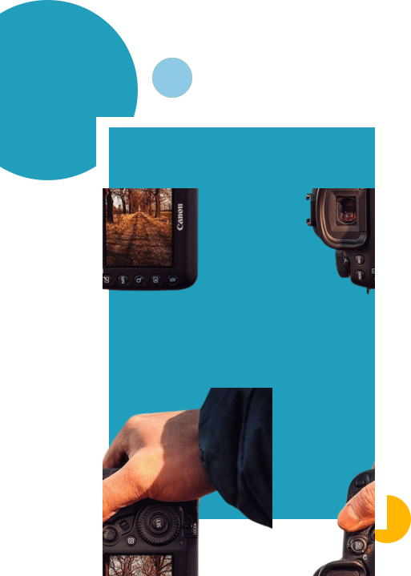

Fotografi
Seni Melukis dengan
Cahaya
Read now

Fotografi ?
Fotografi adalah sebuah seni melukis dengan cahaya yang memperlihatkan adanya
relasi intensional yang tercipta antara objek dan seorang fotografer dalam sebuah foto. Pada
hakekatnya, fotografi merupakan bentuk komunikasi secara visual yang bisa dinikmati oleh
banyak orang hingga terjalin suatu kontak pemahaman makna. Untuk mengabadikan sebuah
objek diperlukannya alat yang disebut dengan kamera.